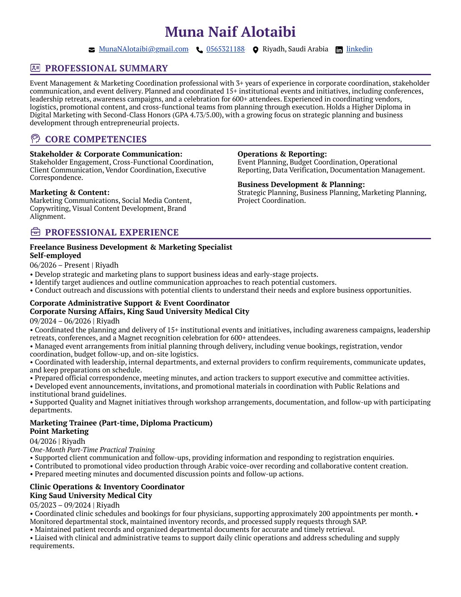
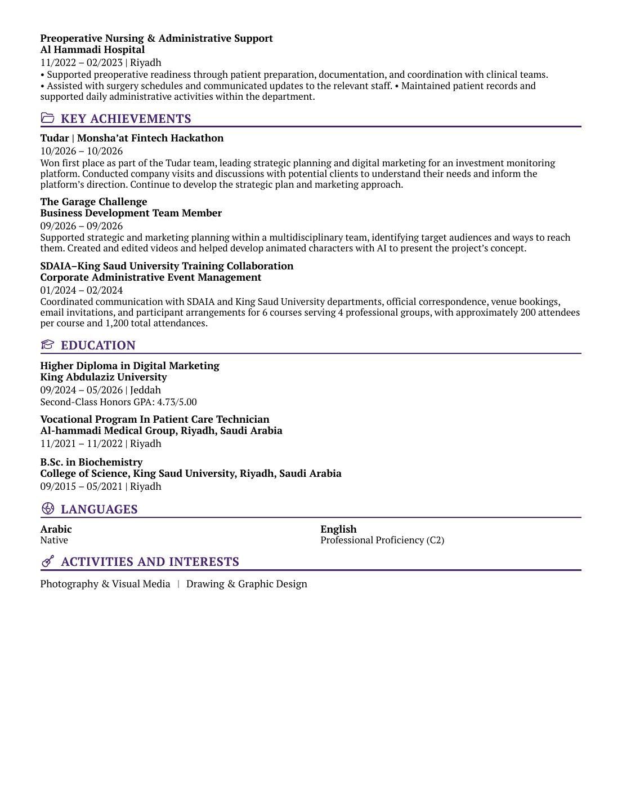

أخطط للنمو، وأحول التفاصيل إلى تجربة لا تُنسى.I plan for growth, and turn the small details into an experience people remember.
أنا منى العتيبي من الرياض، فضولية بطبعي وأتحمس لأي فكرة تلفت انتباهي. أعمل في تنسيق الفعاليات والدعم الإداري وأتجه نحو تطوير الأعمال، وأحب أن أكتشف ما يمكن أن يعمل بشكل أفضل، وأجمع الناس حول الفكرة، ثم أخطو الخطوة التالية لتتحقق.I'm Muna Alotaibi from Riyadh, curious by nature and quick to get involved when an idea catches my attention. I work in event coordination and admin support and I'm moving into business development. I enjoy seeing what could work better, bringing people into the conversation, and taking the next step to make it happen.
العتيبيMuna Naif
Alotaibi
تُدار: منصة لمتابعة الاستثماراتTudar: an investment monitoring platform
- الهاكاثونThe hackathon
- هاكاثون للتقنية المالية تنظمه منشآت، تتنافس فيه الفرق على تطوير حلول مالية مبتكرة خلال وقت محدود.A fintech hackathon run by Monsha'at, where teams compete to build new financial solutions in limited time.
- الفكرةThe idea
- منصة تساعد المستثمرين على متابعة استثماراتهم في مكان واحد.A platform that helps investors follow their investments in one place.
- دوريMy role
- قدت التخطيط الاستراتيجي والتسويق الرقمي للفريق. زرت عدداً من الشركات وقابلت عملاء محتملين لفهم احتياجاتهم، وبنيت على ذلك توجه المنصة وخطة دخولها للسوق.I led the team's strategic planning and digital marketing. I visited companies and met potential clients to understand their needs, then shaped the platform's direction and go-to-market plan around them.
- النتيجةThe result
- فاز الفريق بالمركز الأول، وما زلت أعمل على تطوير الخطة الاستراتيجية والتسويقية للمنصة.The team won first place, and I'm still developing the platform's strategy and marketing plan.
نسقت أكثر من 15 فعالية ومبادرة مؤسسية في المدينة الطبية الجامعية، بأحجام وجماهير مختلفة. يتركز عملي على أن تسير الفعالية وفق خطة واضحة منذ اعتمادها حتى يوم التنفيذ، وأن تكون كل جهة مشاركة على اطلاع بدورها ومواعيدها.I coordinated 15+ institutional events and initiatives at University Medical City, across different sizes and audiences. My focus is keeping each event on a clear plan from approval to delivery, with every party aware of its role and timing.
دوريMy role
- إعداد جدول الفعاليات السنوي: جمع المقترحات من الأقسام، وعرضها على الإدارة التنفيذية لاعتماد المواضيع والتواريخ، ثم نشره على المدراء.Building the annual events calendar: collecting proposals from departments, getting topics and dates approved by the executive director, then publishing it to managers.
- حجز القاعات والمواقع وتنسيق التواريخ مع الأقسام المعنية.Booking venues and aligning dates with the departments involved.
- طلب عروض الأسعار من الموردين ورفعها للإدارة.Requesting vendor quotes and submitting them to management.
- إعداد نماذج التسجيل ومتابعة أعداد الحضور.Building registration forms and tracking attendance.
- تصميم الدعوات وبرامج الفعاليات بالتنسيق مع العلاقات العامة.Designing invitations and programmes with Public Relations.
- التنسيق في الموقع ومتابعة التجهيزات يوم الفعالية.On-site coordination and setup on the day.
نماذج من أعماليWork samples
أبرز النماذج فقط. اضغط على أي نموذج لعرض تفاصيله وصوره.Highlights only. Tap any sample to see its details and photos.
بدأ اهتمامي بتنظيم الحملات التوعوية منذ المرحلة الجامعية، واستمر خلال مسيرتي المهنية. أبادر بفكرة الحملة، وأتواصل مع الجهات الداعمة والشريكة، وأتولى تنظيم الركن وإدارته يوم التنفيذ.My interest in awareness campaigns started at university and has continued through my career. I initiate the campaign, reach out to supporting and partner organisations, and run the booth on the day.
دوريMy role
- اقتراح الحملة وتحديد رسالتها وجمهورها.Proposing the campaign and defining its message and audience.
- التواصل مع الجهات الخيرية والأكاديمية والرعاة لبناء الشراكات وتأمين الدعم.Reaching out to charities, universities and sponsors to build partnerships and secure support.
- إعداد المواد التوعوية والتصاميم.Preparing awareness materials and designs.
- تنظيم الركن التوعوي وإدارته والتفاعل مع الزوار.Setting up and running the booth and engaging visitors.
نماذج من أعماليWork samples
أبرز النماذج فقط. اضغط على أي نموذج لعرض تفاصيله وصوره.Highlights only. Tap any sample to see its details and photos.
توليت الأعمال الإدارية لعدد من الاجتماعات واللجان في شؤون التمريض بالمدينة الطبية الجامعية، من الاجتماعات الداخلية القصيرة إلى اجتماعات المدراء، إضافة إلى المراسلات الرسمية على مستوى الإدارة التنفيذية.I handled the admin work for meetings and committees in Nursing Affairs at University Medical City, from short team meetings to management meetings, as well as official correspondence at executive level.
دوريMy role
- إعداد الخطابات الرسمية بين الأقسام نيابة عن المدير التنفيذي للتمريض، ومن مكتب المدير التنفيذي للمدينة الطبية إلى كافة الأقسام.Drafting official letters between departments for the Executive Director of Nursing, and from the Medical City CEO's office to all departments.
- جدولة الاجتماعات وإرسال دعوات التقويم للحضور.Scheduling meetings and sending calendar invites.
- تدوين محاضر الاجتماعات، وتحويل القرارات إلى جداول زمنية ومهام قابلة للمتابعة.Taking minutes and turning decisions into timelines and trackable tasks.
- إعداد جداول المتابعة وتحديثها حتى إنجاز المهام.Maintaining action trackers until tasks are complete.
- الدعم الإداري للمشاريع، وإعداد موادها، والمشاركة في جمع البيانات.Admin support for projects, preparing their materials, and helping collect data.
- إعداد نماذج تسجيل الحضور للورش ولقاءات Open Door مع المدير التنفيذي للتمريض.Building registration forms for workshops and Open Door sessions with the Chief Nursing Officer.
نماذج من أعماليWork samples
أبرز النماذج فقط. اضغط على أي نموذج لعرض تفاصيله وصوره.Highlights only. Tap any sample to see its details and photos.
أعمل على تحويل الأفكار والمشاريع الناشئة إلى خطط واضحة، تبدأ بفهم احتياجات العملاء والسوق، ثم تحديد الجمهور المستهدف وطرق الوصول إليه. بنيت هذا التوجه من خلال الهاكاثونات وتحديات ريادة الأعمال والعمل الحر، إلى جانب تدريبي في التسويق.I turn early-stage ideas into clear plans, starting from client and market needs, then defining the audience and how to reach it. I built this direction through hackathons, entrepreneurship challenges and freelance work, alongside marketing training.
دوريMy role
- إعداد الخطط الاستراتيجية والتسويقية.Preparing strategy and marketing plans.
- تحديد الجمهور المستهدف وقنوات الوصول إليه.Defining the target audience and channels.
- زيارة الشركات ومقابلة العملاء المحتملين لفهم احتياجاتهم.Visiting companies and meeting potential clients to understand their needs.
- إعداد محتوى العرض من فيديوهات ومواد بصرية.Producing pitch content, from videos to visuals.
نماذج من أعماليWork samples
أبرز النماذج فقط. اضغط على أي نموذج لعرض تفاصيله وصوره.Highlights only. Tap any sample to see its details and photos.
الخبراتExperience
أخصائية تطوير أعمال وتسويقBusiness Development and Marketing Specialist
يونيو 2026 إلى الآنJun 2026 to nowعمل حرFreelanceإعداد خطط استراتيجية وتسويقية للأفكار والمشاريع الناشئة، وتحديد الجمهور المستهدف، والتواصل مع العملاء المحتملين.Strategy and marketing plans for early-stage ideas, audience definition, and outreach to potential clients.
متدربة تسويقMarketing Trainee
أبريل 2026Apr 2026Point MarketingPoint Marketingتدريب عملي لمدة شهر شمل التواصل مع العملاء، والتعليق الصوتي العربي، وتدوين محاضر الاجتماعات.One-month practicum: client communication, Arabic voice-over and meeting minutes.
منسقة فعاليات ودعم إداريEvent Coordinator and Corporate Administrative Support
سبتمبر 2024 إلى يونيو 2026Sep 2024 to Jun 2026شؤون التمريض، المدينة الطبية الجامعيةCorporate Nursing Affairs, University Medical Cityتنسيق الفعاليات من التخطيط حتى التنفيذ، وإعداد المراسلات الرسمية ومحاضر الاجتماعات وجداول المتابعة، والمواد الترويجية بالتنسيق مع العلاقات العامة.Events from planning to delivery, official correspondence, minutes and action trackers, and promotional materials with Public Relations.
منسقة عمليات العيادات والمخزونClinic Operations and Inventory Coordinator
مايو 2023 إلى سبتمبر 2024May 2023 to Sep 2024المدينة الطبية الجامعيةUniversity Medical Cityجدولة قرابة 200 موعد شهرياً لأربعة أطباء، ومتابعة المخزون ومعالجة طلبات التوريد عبر SAP.About 200 appointments a month for four physicians, and stock and supply requests in SAP.
التمريض قبل العمليات والدعم الإداريPreoperative Nursing and Administrative Support
نوفمبر 2022 إلى فبراير 2023Nov 2022 to Feb 2023مستشفى الحماديAl Hammadi Hospitalتنسيق جداول العمليات مع الفرق، وتجهيز المرضى قبل العمليات، وإدارة السجلات.Coordinating surgery schedules with teams, preparing patients before surgery, and managing records.
السيرة الذاتيةCV
فتح ملف PDFOpen PDF
